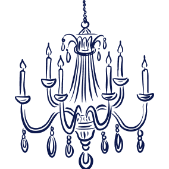

Nosotros sugerimos que se hospedeis directamente en Sevilla Capital ya que podeis llegar a la Hacienda sin problema en UBER o Taxi o BOLT, (la app funciona igual en todos los países) ya que al día siguiente podeis turistear en Sevilla sin problema: Os sugerimos lo siguiente:
Estos alojamientos ofrecen una excelente relación calidad-precio y una ubicación inmejorable.
Hostal Alcobia: Situado en una avenida principal, es una opción muy céntrica y económica con habitaciones sencillas y limpias. Ofrece Wi-Fi gratuito y aire acondicionado, muy necesario en Sevilla. Puedes consultar disponibilidad en su sitio web oficial.
Futurotel Sevilla Space: Este innovador concepto de hotel cápsula ofrece precios muy económicos (desde 35 € por noche) y una ubicación céntrica, a unos 8 minutos a pie del centro. Las cápsulas son modernas y la limpieza es destacable.
JOY Plaza de Armas Hostel Sevilla: Un hostal animado en una mansión restaurada, con una buena relación calidad-precio y piscina en la azotea. Es ideal para socializar y está muy bien situado en el centro. Puedes ver más detalles en su página web.
Si prefieres un hotel con más servicios, estas opciones tienen buenas valoraciones y precios razonables para la zona.
Hotel Don Paco: Este hotel de 3 estrellas tiene una ubicación excelente cerca de las Setas de Sevilla y cuenta con piscina en la azotea con vistas panorámicas. Las habitaciones son cómodas y el precio razonable (alrededor de 72 € por noche).
Hotel Macià Sevilla Kubb: Un hotel moderno y tranquilo cercano al centro, también con piscina exterior de temporada. Las habitaciones son confortables y la relación calidad-precio es buena, con precios desde 74 €.
Estos hoteles ofrecen una buena ubicación cerca del metro para facilitar el acceso a Sevilla y cuentan con servicios como aparcamiento y restaurante.
Hotel YIT Via Sevilla Mairena: Este hotel de 4 estrellas es una opción popular por su excelente relación calidad-precio y su ubicación estratégica. Está situado junto a una parada de metro, lo que permite llegar al centro de Sevilla en unos 15 minutos. Ofrece Wi-Fi gratuito y parking económico. Puedes consultar precios y reservar haciendo click:
Hotel Apartamentos Simón Verde: Un apartotel sencillo de 3 estrellas con jardín y piscina exterior (en temporada). Los apartamentos disponen de cocina básica y Wi-Fi gratis. Aunque se encuentra a las afueras, está a unos 15 minutos en coche del centro, y es una opción tranquila y agradable para descansar. Se pueden encontrar ofertas por alrededor de 92 € la noche para tu fecha.
Hotel Vértice Sevilla Aljarafe: Ubicado en Bormujos (localidad colindante), este hotel de 4 estrellas ofrece habitaciones amplias, piscina exterior (en temporada), pistas de pádel y un restaurante con precios razonables. La relación calidad-precio es buena y a menudo incluye parking en el precio de la habitación, dependiendo de la elección.
Si buscas opciones aún más ajustadas de precio o un ambiente diferente, considera estos lugares:
Estos hoteles ofrecen una buena ubicación cerca del metro para facilitar el acceso a Sevilla y cuentan con servicios como aparcamiento y restaurante.
Hostal Lepanto: Un hostal sencillo y económico en Mairena del Aljarafe, conocido por su limpieza y el trato amable del personal. Las reseñas lo describen como un buen sitio para descansar si se busca un alojamiento funcional y asequible.
La casa de las flores y Chaboletti: Son alojamientos tipo casa/apartamento que ofrecen un ambiente más hogareño. "la casa de las flores" destaca por ser económica, limpia y cerca del metro. "Chaboletti" también está muy bien valorado, cerca de supermercados y zonas comerciales, con cocina completa y, en algunos casos, piscina.
Cool Garden: Este alojamiento, identificado como propiedad de mujeres, ofrece habitaciones impecables en una zona tranquila y cercana a restauración local con buena relación calidad-precio. La anfitriona es muy atenta y ayuda con información sobre el transporte público a Sevilla.
Para que disfrutes tu viaje al máximo, te dejamos una serie de actividades para realizar: